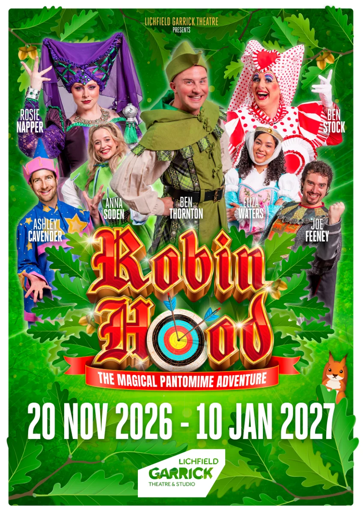

The Lichfield Garrick is transforming into Sherwood Forest this winter as it prepares to stage Robin Hood from 20 November 2026 to 10 January 2027. Marking the venue's first in-house-produced pantomime in over a decade, the festive spectacular arrives straight from the Garrick family to yours following a stellar milestone year that saw the venue produce its hit in-house musical Disenchanted! and secure its long-term future through an extended council lease.
We love a home-grown festive treat here at Behind the Magic Curtain, and the 2026 line-up promises double the laughter, double the fun, and double the Ben! Garrick veteran Ben Thornton takes on the titular role of Robin Hood, joined by Great British Pantomime Award winner Ben Stock, who is ready to delight family audiences as the iconic Nurse Nellie. They are joined by Joe Feeney as the dastardly Sheriff of Nottingham, alongside a wonderfully talented ensemble featuring Rosie Napper as Morgana, Eliza Waters as Maid Marian, Ashley Cavender as Merlin, and Anna Soden as Bluebell.
Helmed by CEO and Artistic Director Daniel Buckroyd with costume designs by John Brooking, this production is set to be an unmissable festive highlight packed with traditional cheer, live music, and magical panto mischief.
Photo Gallery
Dates: 20 November 2026 – 10 January 2027
Relaxed Performance Sunday 29th November, 11am
BSL Signed Performances: Thursday 17th December, 7pm / Sunday 3rd January, 11am
Venue: Lichfield Garrick Theatre & Studio
Key Cast: Ben Thornton (Robin Hood), Ben Stock (Nurse Nellie), Joe Feeney (Sheriff of Nottingham), Rosie Napper (Morgana), Eliza Waters (Maid Marian), Ashley Cavender (Merlin), and Anna Soden (Bluebell).
Tickets & Info: Available via lichfieldgarrick.com or by calling the Box Office on 01543 412121.